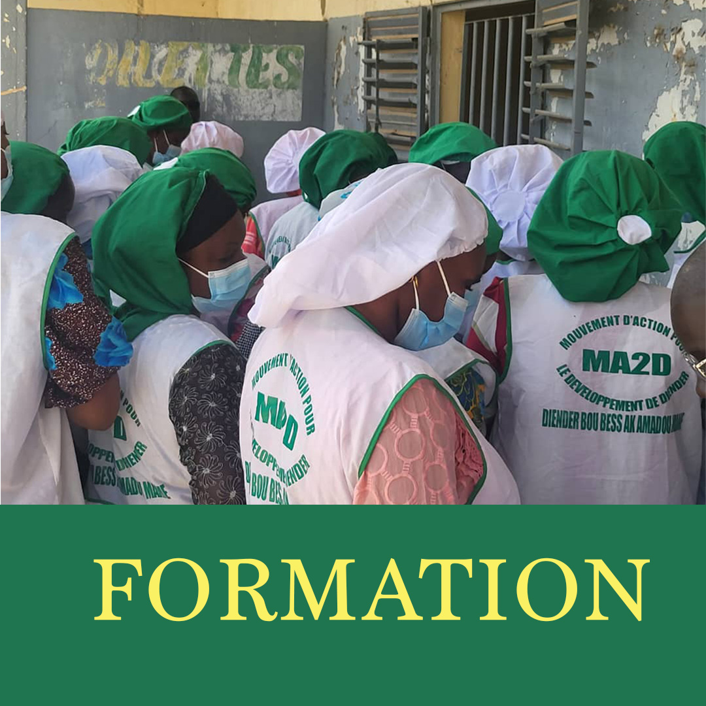
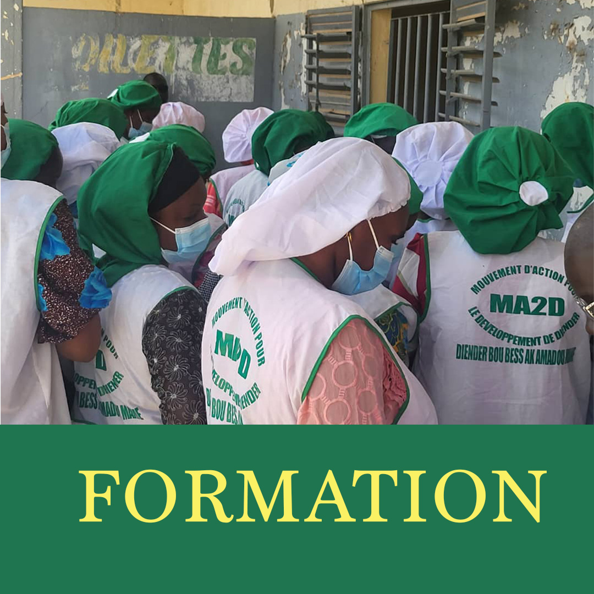

Centre Multifonctionnel Tri-Art
Un espace moderne et polyvalent pour vos formations, séminaires et événements culturels à Rufisque Est.
Nous contacterÀ propos de nous
Situé à Rufisque Est, Dakar Sénégal, au quartier Arafat 4, le Centre Multifonctionnel Tri-Art est un lieu moderne et inclusif qui offre à la communauté un cadre idéal pour apprendre, créer et partager.
Conçu comme un laboratoire de talents, Tri-Art accompagne jeunes, femmes et professionnels dans un esprit de partage, de transmission et d'inclusion. Sa mission repose sur trois piliers : formation, insertion et formalisation.
Le centre dispose d'une salle principale de 250 places assises, équipée en sonorisation et projection, idéale pour séminaires, conférences, projections et spectacles. Il comprend aussi des salles d'ateliers, un espace numérique et un jardin artistique.
Nos activités couvrent plusieurs domaines : culture (théâtre, ciné-club, expositions, défilés de mode), formations pratiques en agro-alimentaire et recyclage créatif, ainsi que l'accompagnement des porteurs de projets pour leur insertion professionnelle.
Grâce à sa vision inclusive, Tri-Art est un espace d'opportunités où chacun peut développer ses compétences, exprimer son talent et contribuer à bâtir une société plus créative et solidaire.
Nos Services
Au Centre Multifonctionnel Tri-Art, nous mettons à votre disposition un éventail complet de services adaptés aux besoins des jeunes, des professionnels, des associations et des entreprises. Notre objectif est de vous offrir un cadre convivial, moderne et inclusif pour apprendre, partager et développer vos projets.
Formations & Séminaires
Des sessions de formation en entrepreneuriat, numérique, agro-alimentaire et développement personnel.
Ateliers Créatifs
Recyclage artistique, couture, peinture et artisanat pour stimuler la créativité locale.
Événements Culturels
Théâtre, ciné-club, expositions et défilés de mode pour valoriser les talents de la communauté.
Accompagnement
Conseils, coaching et mise en réseau pour les porteurs de projets et associations locales.


 



.jpeg)
.jpeg)

.jpeg)
Événement à Venir

EXPOSITION
SALON DES ARTS ET TABLEAUX DES PRODUITS
Une exposition unique mettant en lumière l'art du recyclage et la transformation de la poudre de bois en œuvres d'art remarquables. Découvrez des tableaux innovants et des créations artistiques éco-responsables.
Nos Équipements
Écran géant
Vidéo projecteur
Télé-vidéo
Caméra
Régie son et lumière
250 places assises
Localisation
Notre adresse
Cité Mademba Ngom, près de la SENICO, quartier Arafat 4
Commune de Rufisque Est, sur l'autoroute à péage vers Bargny, Diamniadio et Yéne
Contactez-nous
Informations de contact
Cité Mademba Ngom, près de la SENICO
Quartier Arafat 4, Commune de Rufisque Est
+221 77 633 27 71
triarts2023@gmail.com
Lundi - Vendredi: 8h00 - 18h00
Samedi: 9h00 - 13h00